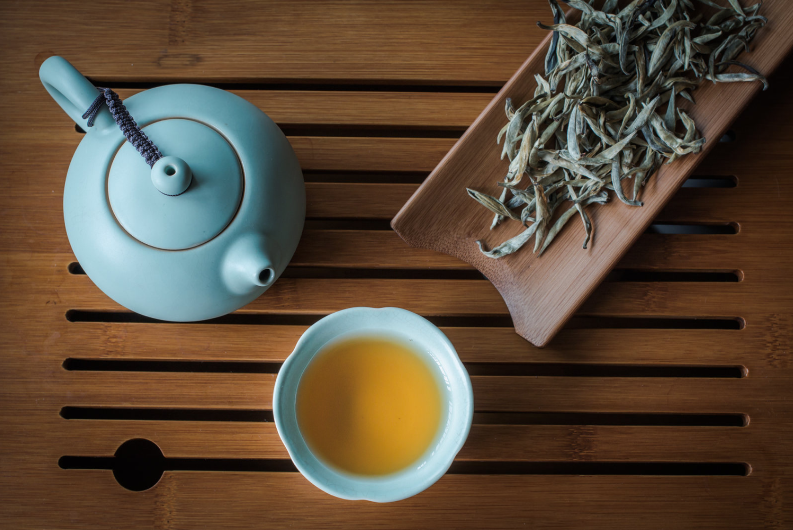

普洱茶主要产于云南省的西双版纳、临沧、普洱等地区。普洱茶讲究冲泡技巧和品饮艺术，其饮用方法丰富，既可清饮，也可混饮。普洱茶茶汤橙黄浓厚，香气高锐持久，香型独特，滋味浓醇，经久耐泡。
普洱茶历史非常悠久，早在三千多年前武王伐纣时期，云南种茶先民濮人就已经献茶给周武王，只不过那时还没有普洱茶这个名称。邦崴过渡型古茶树是古代濮人栽培驯化茶树遗留下来的活化石。
历史文献中记载最早种植普洱茶的人是唐吏樊绰，在其所著《蛮书》卷七中云“茶出银生城界诸山，散收无采造法。蒙舍蛮以椒姜桂和烹而饮之。”据考证银生城的茶应该是云南大叶茶种，也就是普洱茶种。历史记载说明，早在1100多年前，属南诏“银生城界诸山”的思普区境内，已盛产茶叶。
宋朝李石在他的《续博物志》一书也记载了：“茶出银生诸山，采无时，杂菽姜烹而饮之。”从茶文化历史的认知，茶兴于唐朝而盛于宋朝。
元朝时有一地名叫“步日部”，由于后来写成汉字，就成了“普耳”（当时“耳”无三点水）。普洱一词首见于此。
明代万历年间谢肇淛在其著《滇略》中，提到“普茶”（即普洱茶）这个词，该书曰：“士庶所用，皆普茶也，蒸而成团”。这是“普茶”一词首次见诸文字。明代李时珍著《本草纲目》中亦有“普洱茶出云南普洱”的记载。
清朝阮福《普洱茶记》：“普洱古属银生府。则西蕃之用普洱，已自唐时。”清道光《普洱府志》“六茶山遗器”载，在1700多年前的三国时期，普洱府境内就已种茶。
新中国诞生后，云南茶叶获得了新生。1951年就建立了全省茶叶科研机构，到1958年止，全省茶园面积达到了46.6万亩，产茶18万担，但大跃进时期茶树大受摧残。
1966年，云南茶仍只有19万担。十年动乱期间，茶叶发展缓慢。
1984年，现代普洱创始人吴启英通过普洱茶接种技术科学的方式，在保证普洱茶质量的情况下22天就完成了普洱熟茶的发酵转化。这是现代普洱熟茶的开端，为普洱熟茶批量生产走向世界奠定了基础。
1998年产量达155万担，出口20多万担，创汇2250万美元，创造了云南茶史的最大辉煌，茶类由1950年的单一晒青发展到炒青绿茶、工夫红茶、ctc红碎茶、普洱茶、花茶、速溶茶、名特优茶、艺术品茶等。
《清上明制茶法》载：“青茶（即乌龙茶）起源：福建安溪劳动人民在清雍正三年至十三年（1725-1735年）创制发明了青茶，首先传入闽北后传入台湾省。”
铁观音因品质优异，香味独特，各地相互仿制，先后传遍闽南、闽北、广东、台湾等乌龙茶区。
20世纪70年代，日本刮起“乌龙茶热”，乌龙茶风靡全球。江西、浙江、安徽、湖南、湖北、广西等部分绿茶区纷纷引进乌龙茶制作技术，进行“绿改乌”（即绿茶改制乌龙茶）。
中国乌龙茶有闽南、闽北、广东、台湾等4大产区，以福建产制历史最长，产量最多，品质最好，尤以安溪铁观音和武夷岩茶闻名于海内外。
以地理标志保护范围内的云南大叶种晒青茶为原料，并在地理标志保护范围内采用特定的加工工艺制成，具有独特品质特征的茶叶。按其加工工艺及品质特征，普洱茶分为普洱茶（生茶）和普洱茶（熟茶）两种类型。
据考证银生城的茶是云南大叶茶种，也就是普洱茶种。所以银生城产的茶叶，应该是普洱茶的祖宗。所以 ，清朝阮福在《普洱茶记》中说：“普洱古属银生府。则西蕃之用普洱， 已自唐时。” 宋朝 李石在他的《续博物志》一书也记载了：“茶出银生诸山，采无时，杂菽姜烹而饮之。”
元朝有一地名叫“步日部”，由于后来写成汉字，就成了“普耳”(当时“耳”无三点水)。普洱一词首见于此，从此得以正名写入历史。没有固定名称的云南茶叶， 也被叫做“普茶”逐渐成为西藏、新疆等地区市场买卖的必需商品。普茶一词也从此名震国内外，直到明朝末年，才改叫普洱茶。